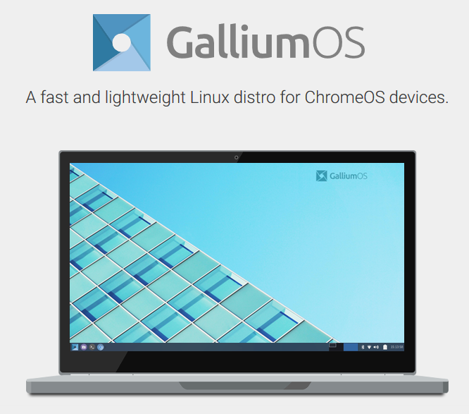

<!doctype html>
<html>
	<head>
		<meta charset="utf-8">
		<meta name="viewport" content="width=device-width, initial-scale=1.0, maximum-scale=1.0, user-scalable=no">

		<title>Chromebook+Linux実演</title>

		<link rel="stylesheet" href="css/reveal.css">
		<link rel="stylesheet" href="css/theme/night.css">

		<!-- Theme used for syntax highlighting of code -->
		<link rel="stylesheet" href="lib/css/zenburn.css">

		<!-- Printing and PDF exports -->
		<script>
			var link = document.createElement( 'link' );
			link.rel = 'stylesheet';
			link.type = 'text/css';
			link.href = window.location.search.match( /print-pdf/gi ) ? 'css/print/pdf.css' : 'css/print/paper.css';
			document.getElementsByTagName( 'head' )[0].appendChild( link );
		</script>
	</head>
	<body>
		<div class="reveal">
			<div class="slides">
				<section data-markdown=""
				data-separator="^\n\n\n">
				<script type="text/template">
## Chromebook<br>+<br>Linux<br>
を実演します  

[GitHub@akiya64](https://github.com/akiya64)  
2018.7.21


### Linux on Chrome OS
[ChromebookがLinuxの実行を正式サポート。<br>Android Studioも実行可能に。<br>Google I/O 2018](https://www.publickey1.jp/blog/18/chromebooklinuxandroid_studiogoogle_io_2018.html)

https://www.publickey1.jp/ より


公式ではChromebook Pixelのみ  
（日本未発売 18年7月現在）  


https://store.google.com/product/google_pixelbook

<aside class="notes">
	検索にもヒットするけど、リダイレクトかけて表示させないという姑息さ
</aside>


### Pixelbook以外での方法

1. サードパーティのChroutonというツールを使う  
https://github.com/dnschneid/crouton
2. ChromeOSでなく別のディストリをブートする  
  ブートロックは解除可能  

  **両方やってみました**  
  現在発売されているChromebookでも大体は、動かせるスペックだから待っててねとのことです。

<aside class="notes">
	現在発売されているChromebookでも大体は、動かせるスペックだから待っててねとのことです。
	が、待てませんのでやってみました。
</aside>


### 使用機
 [ThinkPad 13 Chromebook](https://www.lenovo.com/us/en/laptops/thinkpad/thinkpad-13-series/ThinkPad-13-Chromebook/p/22TP2TX132E20GL)  

 

 ** 国内未発売 ** （多分、販売されることはない）

<aside class="notes">
	300e 500eというモデルが教育機関向けに国内発売はされてます。
	https://www.lenovo.com/jp/ja/notebooks/lenovo/lenovo-n-series/300e-Chromebook/p/88ELC1S9997
	「一般販売に期待」なんてブログがありましたが、販売されないと思います。
</aside>
	


#### 購入方法
Amazon.com  5月25日注文 6月3日着 


[https://www.amazon.com/Lenovo-ThinkPad-13-Chromebook-Celeron/dp/B01HBJ60ME](https://www.amazon.com/Lenovo-ThinkPad-13-Chromebook-Celeron/dp/B01HBJ60ME)


### スペック
* 13.3インチ液晶 ノングレア
* 1366 x 768px
* Intel [Celeron 3855U](https://ark.intel.com/ja/products/92211/Intel-Celeron-Processor-3855U-2M-Cache-1_60-GHz) 1.60GHz/2C2T/2MB
* HD Graphics 510 iGPU
* 4GB RAM DDR3
* ストレージ 16GB 内蔵eMMC
* Wi-fi 802.11 ac/a/b/g/n
* USB 3.0 x2 TypeC x2 計4スロット
* SDカードスロット

<aside class="notes">
	スペックはあまり低いです。CPUはSkylake世代。
	特に内蔵ストレージ16GBとメモリ4GBは不安、Googleのクラウドサービスを使うならいいのかな。
	ストレージはSDカードで足してねということか
	無線LANはac/a対応なので、そこは不安無し速い。
</aside>


## 準備

1. デベロッパーモードを有効にする
2. [Chrouton](https://github.com/dnschneid/crouton)をダウンロード
3. Chrouton経由でUbuntu/Debianをインストール


参考  
[Qiita chromebookにcroutonでubuntuをいれる](https://qiita.com/yasuki/items/f6a8a350087517b0069b)


### ChromeOSでLinuxコンテナを実行する

コンテナだと思う

* ターミナルの起動 Ctrl+alt+T
* Shell起動
* Chroutonの紹介
	* インストール可能なOS/デスクトップ環境リスト
	* 実際のインストールは割愛
* Debian stretchを起動
* ウィンドウモードにしてみる


## 実演
こういうのが見たいとかリクエストあればやります

<aside class="notes">
	日本語が入らない
</aside>


## デュアルブートで別のLinuxを起動させる

1. ブートロックを解除、USBメモリからのブートが可能になる
2. インストール用ISOイメージを使ってブート可能なUSBメモリを作成
3. そのままライブイメージで使う or インストール




* XubuntuでChromebookに最適化している
* [GalliumOS](https://galliumos.org/) ≒ Xubuntu = Ubuntu + xfce


## 実演2
* 実際にブートしてみます
* DockerでWordPressを実行してみます
* リクエストあればここでもやってみます


### その他の参考リンク
* [Chromebooks are ready for your next coding project](https://www.blog.google/products/chromebooks/linux-on-chromebooks/)
* [Amazon.com Google Pixelbook](https://www.amazon.com/Google-Pixelbook-i5-RAM-128GB/dp/B075JSK7TR)
* [ThinkPad 300e Chromebook 日本Lenovo](https://www.lenovo.com/jp/ja/notebooks/lenovo/lenovo-n-series/300e-Chromebook/p/88ELC1S9997)
* [archlinux ChromeOSデバイス](https://wiki.archlinux.jp/index.php/Chrome_OS_%E3%83%87%E3%83%90%E3%82%A4%E3%82%B9)

以上です。
ありがとうございました。
					</script>
				</section>
			</div>
		</div>

		<script src="lib/js/head.min.js"></script>
		<script src="js/reveal.js"></script>

		<script>
			// More info about config & dependencies:
			// - https://github.com/hakimel/reveal.js#configuration
			// - https://github.com/hakimel/reveal.js#dependencies
			Reveal.initialize({
				dependencies: [
					{ src: 'plugin/markdown/marked.js' },
					{ src: 'plugin/markdown/markdown.js' },
					{ src: 'plugin/notes/notes.js', async: true },
					{ src: 'plugin/highlight/highlight.js', async: true, callback: function() { hljs.initHighlightingOnLoad(); } }
				]
			});
		</script>
	</body>
</html>
